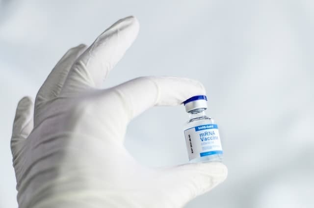

播種性血管内凝固症候群の鍼灸
感染症や悪性腫瘍等を契機に全身の細血管で血栓と出血が同時進行する重篤な合併症です。入院治療が絶対最優先で、発症中・凝固異常時は鍼灸厳禁です。
まず知っておきたい要点と施術方針
播種性血管内凝固症候群（DIC）は、敗血症などの重度感染症、がん・急性白血病などの悪性腫瘍、外傷、妊娠合併症、ショック状態などをきっかけに、全身の細い血管内で血液凝固が異常に活性化する重篤な合併症です。多数の微小血栓が脳・腎臓・肺などの血流を妨げて多臓器不全を招く一方、血小板や凝固因子が消費され尽くすことで重度の出血傾向が生じます。入院下での基礎疾患治療、抗凝固療法、輸血等の集中的な医療管理が不可欠です。（公式解説）
このようなお悩みはありませんか？
- ✓皮膚に紫色の斑点が出たり、出血が止まりにくかったりする
- ✓血尿や吐血・下血、息苦しさなどの重い全身症状がある
- ✓がんや敗血症、外傷などの基礎疾患の治療中である
- ✓病院での治療を終えて凝固機能が完全に安定し、回復期の体調を整えたい
当院の施術アプローチ
院長YouTube解説・関連動画
病気がきっかけで血栓ができたり過剰な出血が見られたりする合併症
播種性血管内凝固症候群は、外傷やがん、急性白血病、重度の細菌の感染症などの病気がきっかけで全身の細い血管に血栓ができたり過剰な出血が見られたりする合併症です。
播種性血管内凝固症候群では、血栓ができることで血管が詰まりやすくなるため、脳や腎臓や肺などに問題が起きてしまいます。
さらに、出血しやすい状態になり、出血が止まりにくくなるため、大量出血にもつながります。
播種性血管内凝固症候群では、全身に出血症状が現れる
播種性血管内凝固症候群では、全身に出血症状が現れます。血尿や吐血、下血などの症状が現れるのです。血が出やすい状態で、血が止まりにくい状態になります。
播種性血管内凝固症候群では全身の細い血管に血栓もできます。そのため、血管が詰まったり血流の流れが悪くなったりすることもあります。血管の詰まりや血流の悪さが多臓器不全に繋がり、命に関わることもあります。
播種性血管内凝固症候群の症状の特徴には、皮膚に紫色の斑点が現れることも挙げられます。
播種性血管内凝固症候群では、全身に出血症状が現れます。血尿や吐血、下血などの症状が現れるのです。血が出やすい状態で、血が止まりにくい状態になります。
播種性血管内凝固症候群では全身の細い血管に血栓もできます。そのため、血管が詰まったり血流の流れが悪くなったりすることもあります。血管の詰まりや血流の悪さが多臓器不全に繋がり、命に関わることもあります。
播種性血管内凝固症候群の症状の特徴には、皮膚に紫色の斑点が現れることも挙げられます。
播種性血管内凝固症候群の改善で大事なことは、発症の原因となった病気や外傷を特定し、原因を早く改善することです。そのため、発症している病気に応じて、抗がん剤や抗白血病剤、抗生物質などを使って改善を行います。
しかし、播種性血管内凝固症候群の原因となる病気は、すぐに改善する病気ではありません。
そのため、その時の状態をきちんと見極めて、血を固まりにくくすることを目的にヘパリンやシル酸ガベキサートなどを使ったり、出血しにくくすることを目的にアンチトロンビン濃縮製剤などを使ったりすることもあります。
最近ではトロンボモジュリン製剤と呼ばれる遺伝子組換え薬を使うことも増えています。場合によっては手術を行うこともあります。
DICの改善には以下のようなアプローチが含まれます。
基礎的な病気の改善：
DICは他の病態の合併症として現れることが多いため、まずは基礎的な病気の改善が行われます。例えば、悪性腫瘍が原因の場合には抗がん剤や手術が検討されます。敗血症が原因の場合には感染の駆除と抗生物質の使用が行われます。
血液凝固の制御：DICでは血管内で異常な血液凝固が起こります。このため、抗凝固薬が使用されて凝固の亢進を抑制します。ヘパリンなどの抗凝固薬が投与され、血液凝固を制御します。
血小板の補充：DICでは血小板が消耗されることがあります。重度の出血がみられる場合には、血小板輸血が行われます。これにより血小板の数を増やし、出血のコントロールを図ります。
出血管理：DICによる出血は重篤な場合があります。出血部位の圧迫や止血処置、必要に応じて手術的な処置が行われます。また、輸血や凝固因子の補充も出血管理の一環として行われます。
症状に対する対処：
DICに伴う臓器障害や症状に対して、対処が行われます。例えば、血圧の低下がみられる場合には血管収縮薬が使用され、呼吸困難がある場合には酸素の補充が行われます。
血漿交換：重症のDICにおいては、血漿交換が検討されることがあります。血漿交換は異常な凝固物質を除去し、正常な血液環境を回復するために行われます。
改善の目的は、DICの進行を抑え、血液凝固と出血のバランスを調整することです。しかし、DICは重篤な状態であり、予後は病態や原因によって異なります。早期の判断と適切な改善が重要であり、計画は個別に設定されます。
また、DICの改善には継続的なモニタリングとフォローアップが不可欠です。病院での入院が一般的です。入院中は状態を密にモニタリングし、改善の効果や合併症の早期発見に努めます。

播種性血管内凝固症候群を防ぐためには、原因となる病気の予防が大事です。手洗いやうがいなどをきちんとすることや、感染症のワクチンを受けることが大事です。
播種性血管内凝固症候群を発症し、改善に取り組んだ後は、再発を防ぐために通院が進められています。
播種性血管内凝固症候群の改善例
播種性血管内凝固症候群（DIC）の実際の改善の例について紹介します。DICは、重篤な出血や凝固異常を伴う危険な状態であり、早期かつ適切な改善を行うことが必要です。
ケーススタディ1: A
Aは、癌の進行に伴ってDICの症状を呈しました。初期の症状は、強い出血傾向、瘀血（チアノーゼ）、血小板減少、凝固異常でした。Aのアプローチは以下の通りです。
最初に、一般的な状態を安定化させるための措置が取られます。これには、酸素投与、輸液、血液製剤の補充（赤血球濃厚、新鮮凝固因子、血小板濃厚）が含まれます。
改善の主眼はDICの進行を抑制することです。抗凝固法（ヘパリン）や血小板活性薬（トロンボポエチン）が使用される場合もあります。また、DICの原因である癌に対する改善も同時に行われます。
DICの改善においては、基礎となる病気（この場合は癌）の改善も重要です。抗がん剤や手術など、癌の進行を抑える改善が行われます。
DICによる出血や凝固異常を管理するための方法も行われます。これには、出血部位の圧迫止血、凝固因子補充、トランサミン酸製剤の使用などが含まれます。
改善後は経過観察が重要です。DICの進行や再発の兆候を監視するため、定期的に血液を調べます。また、身体的、精神的なサポートも提供されます。
ケーススタディ2: B
Bは敗血症によってDICを発症しました。Bの改善アプローチは以下のような特徴があります。
DICの原因である感染症を制御することが最初のステップとして広域抗生物質や感染症の巣のドレナージなどが行われます。
DICの進行を抑えるために、血液パラメータ（血小板数、凝固因子のレベル、フィブリノーゲン濃度など）の監視が行われます。必要に応じて、補充が行われる場合もあります。
出血や凝固異常に対するサポートが重要です。出血部位の処置、トランサミン酸製剤の投与、輸血などが行われます。
DICの改善中、予後の予測とそれに基づく適切なケアが行われます。予後予測には、DICに関連する臓器障害の程度、基礎的な病気の重症度、改善に対しての反応などが考慮されます。
DICの改善には、個々の状態や原因に基づいてカスタマイズされる必要があります。改善の主な目的は、DICの進行を抑制し、基礎的な病気や出血リスクに対処することです。

循環器のお悩みのツボ図解とセルフケア
実際の施術ではお一人おひとりの体質・症状に合わせて選穴しますが、循環器領域の補完ケア（高血圧・安定狭心症・心拍変動調整）の臨床でよく用いられる代表的なツボの目安です。

📌 代表的なツボの詳細一覧表を開く（6穴） ▼
| ツボ名 | 位置の目安 | 主な狙い | セルフケアの注意点 |
|---|---|---|---|
| 内関（ないかん） | 手首内側横ジワから肘側へ指3本分、2腱の間 | 動悸・胸部圧迫感の緩和、自律神経調整 | 吐く息に合わせて5秒ほど優しく圧迫 |
| 膻中（だんちゅう） | 左右の乳頭を結ぶ線の中央（胸骨上） | 胸のつかえ・呼吸の浅さ・ストレス性緊張緩和 | 骨直上のため強く押さず温める・軽くさする |
| 神門（しんもん） | 手首内側横ジワの小指側くぼみ | 交感神経の過緊張鎮静、不安感・動悸ケア | 尺骨神経近接のため爪を立てずソフトに |
| 曲池（きょくち） | 肘を曲げた外側のシワ先端 | 血圧変動・上半身ののぼせ・末梢循環サポート | 痛みの出ない心地よい強さで左右交互に |
| 足三里（あしさんり） | 膝外側下のくぼみから指4本分下 | 全身血流・自律神経バランス・疲労回復 | 食直後や入浴直後の強い刺激は避ける |
| 太衝（たいしょう） | 足の甲、親指と人差し指の骨が交わる手前 | ストレス性の血圧上昇・末梢の巡り調整 | 足背動脈拍動部付近のため強く揉みすぎない |
国際査読論文の科学的エビデンス
国際的な医学データベース（PubMed・Cochrane等）で報告されている循環器領域の補完ケア（高血圧・安定狭心症・心拍変動調整）領域の代表的な査読済み鍼灸研究をまとめています（標準治療との併用や研究上の限界を含めて正確に掲載）。
📚 査読論文データ・PubMed出典リンクを開く（4件） ▼
| 年・研究デザイン | 対象・規模 | 主な結果 | 限界・出典 |
|---|---|---|---|
| 2019年 大規模多施設RCT | 慢性安定狭心症 398名解析（標準薬物療法併用） | 16週時点の4週間発作減少は実鍼群がシャム群比5.18回・待機群比5.63回多く有意改善（P<0.001）。 | 標準薬物療法への併用（補完）試験であり単独療法ではない。 JAMA Intern Med (PMID: 31355870) |
| 2007年 シャム対照RCT | 本態性高血圧 140名完了（ドイツ・24時間ABPM） | 治療終了時の24時間血圧はシャム比SBP -6.4mmHg・DBP -3.7mmHg有意低下（P<0.001）。 | 終了3〜6か月で治療前水準へ戻るため継続ケアが必要。 Circulation (PMID: 17548730) |
| 2015年 メタ解析 | 高血圧 23 RCTs（n=1,788） | 降圧薬＋実鍼は降圧薬＋シャム比でSBP -7.47mmHg・DBP -4.22mmHg有意低下。鍼単独は降圧薬と同等・根拠不十分。 | 盲検化・異質性に課題。降圧薬の自己中断は厳禁。 PLoS One (PMID: 26207806) |
| 2025年 メタ解析 | 心拍変動（HRV）10 RCTs（n=744） | 自律神経全体の適応指標SDNNを有意に改善、重篤な有害事象なし。 | LF・HFには不確実性が高くさらなる検証が必要。 Front Neurosci (PMID: 41230507) |
参考文献・出典
- 銀座そうぜん鍼灸院「播種性血管内凝固症候群の公式解説ページ」
- 2019年 大規模多施設RCT（慢性安定狭心症 398名解析（標準薬物療法併用））— JAMA Intern Med (PMID: 31355870)
- 2007年 シャム対照RCT（本態性高血圧 140名完了（ドイツ・24時間ABPM））— Circulation (PMID: 17548730)
- 2015年 メタ解析（高血圧 23 RCTs（n=1,788））— PLoS One (PMID: 26207806)
- 2025年 メタ解析（心拍変動（HRV）10 RCTs（n=744））— Front Neurosci (PMID: 41230507)
よくある質問（FAQ）
Q. DICと診断されている間や、出血しやすい状態のときに鍼灸は受けられますか？▼
Q. 治療が終わり血液検査が落ち着いたあと、疲労回復で相談することはできますか？▼
あわせて読まれる関連疾患（循環器のお悩み）
心のう液が大量に貯留し心臓の拡張を妨げる致死的な救急疾患です。緊急の心膜穿刺や病院治療が絶対最優先で、回復・安定期のみ補完ケアを検討します。
血管内に血の塊ができて血流を塞ぐ病気です。急性期は救急・専門治療を最優先し、安定期の予防と体調管理をサポートします。
長時間の四肢・腰部圧迫後の再灌流で致死性不整脈や急性腎不全を招く救急疾患です。急性期は救急医療最優先・鍼灸絶対禁忌で、回復期のみ支えます。
骨折や整形外科手術後に脂肪滴が血管を塞ぐ重篤な救急疾患です。急性期は救急医療が絶対最優先・鍼灸禁忌で、退院後の回復期のみ支えます。
首の骨の中を通る椎骨動脈の内膜が裂ける重篤な血管疾患です。突然の頭痛は即救急受診が必須で、首への施術や操作は絶対禁忌です。
夜間や安静時に心室細動を起こし得る遺伝性不整脈疾患です。循環器専門医での厳重な管理を最優先に、安定期のストレス管理を支援します。
おひとりで悩まず、まずはご相談ください
銀座本院・川口・大宮・横浜・博多・田無の各院でご予約を承っております。